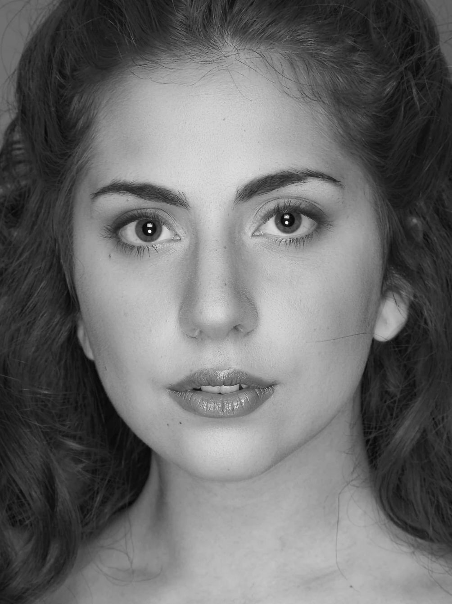
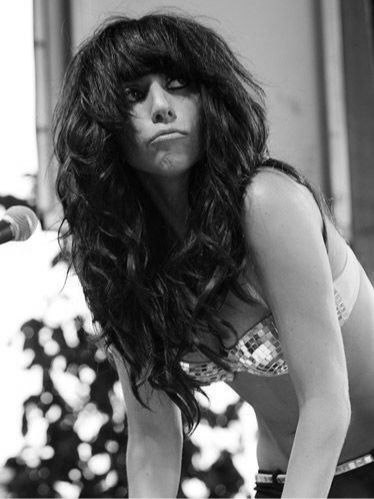
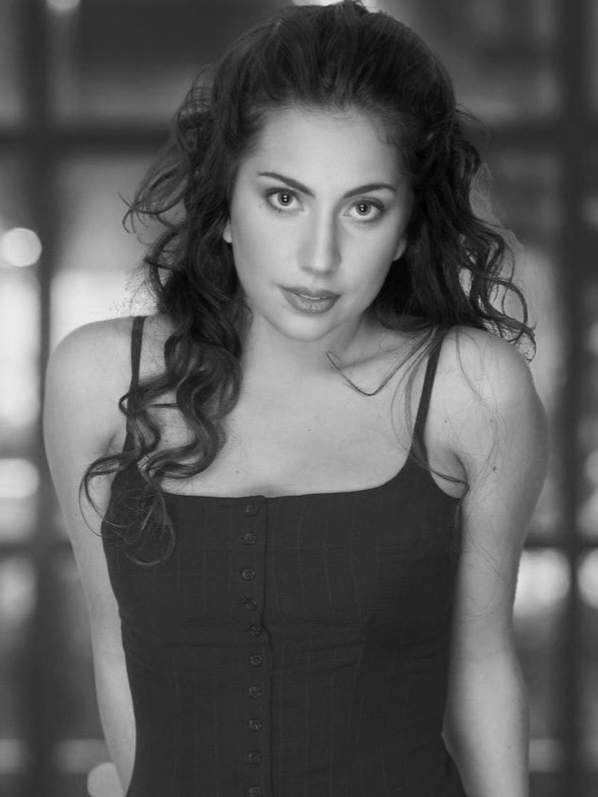

The Great Stefani Joanne Angelina Germanotta, mais conhecida como Lady Gaga |
 Lady Gaga em ensaio para a série AHS: Hotel, 2015 Lady Gaga em ensaio para a série AHS: Hotel, 2015 |
| Stefani nasceu em 28 de março de 1986 no Hospital Lenox Hill na cidade de Nova Iorque, a filha mais velha de Joseph e Cynthia (nascida Bissett) Germanotta. Ela é principalmente de ascendência italiana, com alguma ascendência francesa por parte de mãe. Também possui uma irmã mais nova de 31 (trinta e um) anos, Natali. Por volta dos quatro anos, Stefani começou a aprender piano de ouvido e depois de um tempo escreveu sua primeira música chamada "Dollar Bills". Aprendeu música desde cedo e já se apresentava em palcos em clubes de Nova Iorque quando era adolescente. Ela estudou por dois anos na Tisch School of the Arts da NYU (Universidade de Nova Iorque) antes de abandonar o curso para administrar sua carreira. Criada no Upper West Side de Manhattan, Gaga disse em entrevista que seus pais vieram de famílias de classe baixa e trabalharam duro para tudo. A partir dos 11 anos, ela frequentou o Convento do Sagrado Coração, uma escola católica romana particular só para meninas. No ensino médio, ela diz que estava "focada, determinada. Eu sempre estive em uma banda ou em um musical. Eu realmente não me encaixava, mas tinha amigos porque sou uma garota legal e divertida para festas". Germanotta se descreveu no ensino médio como "muito dedicada, muito estudiosa, muito disciplinada", mas também "um pouco insegura", como disse em uma entrevista: "Eu costumava ser ridicularizada por ser muito provocativa ou muito excêntrica, então eu comecei a diminuir o tom. Eu não me encaixava e me sentia uma aberração." | Uma de suas lembranças favoritas de infância é tocar um concerto de piano no Sagrado Coração aos 8 anos. “Havia uma fila de vinte garotas sentadas em fila com nossos lindos vestidos, e cada uma de nós se levantou para tocar”, diz ela alegremente. “Fiz um trabalho muito bom. Eu estava muito bem. Aos 11 anos, ela começou a frequentar um dia inteiro de aulas de atuação aos sábados. “Lembro-me da primeira vez que bebi de uma xícara de café imaginária”, diz ela”, diz ela, fechando os olhos. “Essa é a primeira coisa que eles ensinam. Também posso sentir a chuva, quando não está chovendo.” Depois cantou em uma banda cover de rock clássico (Mackin Pulsifer?), durante seu primeiro ano do ensino médio. A banda fez covers de músicas do Led Zeppelin junto com Pink Floyd e Jefferson Airplane. Aos treze anos, ela escreveu sua primeira balada para piano, batizada de "To Love Again". Aos quatorze anos, Stefani começou a trabalhar com o professor de canto Don Lawrence. Na mesma época, começou a se apresentar em noites de microfone aberto. Ela era tão jovem que sua mãe tinha que ir com ela - sabendo que Stefani iria fugir de qualquer maneira. “Eram bares de jazz, não clubes de sexo”, explica ela. “Eles faziam noites de microfone aberto para que minha mãe me levasse junto e dissesse: 'Minha filha é muito jovem, mas é muito talentosa. Vou sentar com ela enquanto ela toca." Seus pais apoiaram muito sua paixão pela música. Stefani aprendeu alguns anos com Lawrence e começou a escrever músicas como válvula de escape e menos como hobby. |
|

2004-2005: Projeto de Artes Colaborativas 21Aos dezessete anos, Gaga foi uma das vinte pessoas no mundo a ter sido admitida antecipadamente na Tisch School of the Arts da Universidade de Nova York, onde estudou música e teatro no Departamento de Graduação em Teatro. Ela se mudou para um dormitório da NYU na 11th Street. A cada outono, os conselhos municipais da Universidade de Nova York organizam um UltraViolet Live Preliminary, um concurso realizado para beneficiar o câncer. Stefani competiu e venceu em seu salão. Ao mesmo tempo, ela aprimorou suas habilidades de escrita compondo ensaios e artigos analíticos com foco em temas como arte, religião e ordem sócio-política. |

2005-2006: Desenvolvimento artísticoStefani conquistou o 3º lugar do projeto com duas composições originais: Captivated e Electric Kiss. Ao fazer dezoito anos, ela saiu da universidade e da casa dos pais para seguir a carreira artística. F. Fredericks, seu primeiro 'empresário', reservou seu primeiro show pago para Stefani, ajudou a montar Stefani Germanotta Band e também a conseguir sua primeira demo real com Joe Vulpis. Na apresentação ao vivo, Stefani tocou seus solos com piano pesado. A banda foi convidada a tocar nas ruas no 60º Desfile Anual do Dia de Colombo, transmitido ao vivo pela NBC, onde a apresentadora Maria Bartirono disse: “Ela tem apenas dezenove anos e... que voz!”. Um mês depois, a banda gravou uma demo de cinco faixas com o produtor Vulpis. |

2006-2007: DescobertaEm 2006, a Stefani Germanotta Band tocou no The Bitter End e esgotaram suas cinco demos. Eles continuaram a fazer shows e músicas, quando, em Março, esgotaram seu 1º EP, Red and Blue, em sua casa, The Bitter End. A banda foi escolhida por Bob Leone, Diretor de Projetos do Songwriters Hall of Fame, para ser um dos 9 artistas do New Songwriters Showcase de 2006 no Cutting Room. Ela interpretou Hollywood e chamou a atenção de Wendy Starland, colaboradora de Robert Fusari. Ela mencionou a Starland que estava interessada em localizar uma cantora jovem para liderar uma banda como os Strokes - ela não precisava ser bonita, nem mesmo uma ótima cantora, mas precisava ter algo nela que você não pudesse tirar os olhos. |
Copyright 2023. Todos os direitos reservados.